| Field | Value |
|---|---|
| Product | TORMS — Transcript & Official Records Management System |
| Document type | Complete System Specification (SRS + Architecture + Features + LLD) |
| Date | November 2026 |
| Classification | Proprietary |
| Field | Value |
|---|---|
| Document ID | SRS-TORMS-001 |
| Product | TORMS (Transcript & Official Records Management System) |
| Repository | WMSU/wmsu-platform (apps/records-web, apps/base-api module records) |
| Version | 1.0 |
| Date | November 2026 |
| Classification | Proprietary |
This Software Requirements Specification defines functional and non-functional requirements for TORMS, the official academic records and certification system managing transcript of records (TOR) issuance, certification document processing, academic ledger management, alumni registry, public document verification, and records office operations for Philippine university compliance.
In scope
records)Out of scope
| Term | Definition |
|---|---|
| TORMS | Transcript & Official Records Management System |
| TOR | Transcript of Records — official academic transcript document |
| Issuance | Generated official document with verification metadata, print log, and QR code |
| Ledger projection | TORMS copy of academic grades and enrollment history synchronized from USiS (USiS remains system of record) |
| Certification | Official non-TOR document types: honorable dismissal, good moral character, units earned, completion, diploma verification |
| Verification token | Unique code (UUID or sequential) enabling public unauthenticated verification of issued documents |
| Discrepancy | Mismatch between TORMS ledger projection and USiS source data requiring registrar review |
| Alumni standing | Classification of alumni status: active, inactive, distinguished, emeritus |
WMSU/wmsu-platform/README.mdapps/web-portal/public/docs/TORMS-Complete-Guide.htmlapps/web-portal/public/docs/TORMS-API-Specs-Manual.htmlTORMS operates within the WMSU Campus Information System modular architecture:
| Component | Technology | Role |
|---|---|---|
| Records web | React 19 + Vite | Staff and student UI for requests, issuance, alumni management |
| Base API records module | AdonisJS 7 + Lucid ORM | REST services at /api/v1/records/* |
| Database | PostgreSQL schema records |
Official records system of record for issuances and alumni |
| Identity provider | University Platform Access | Authentication, authorization, user management |
| Queue system | BullMQ + Redis | Background jobs (sync, notifications, report generation) |
| Surface | Dev port | Production example |
|---|---|---|
| Records web | http://127.0.0.1:5181 |
https://records.wmsu.edu.ph |
| Base API | http://127.0.0.1:3500 |
https://api.wmsu.edu.ph |
| Identity API | http://127.0.0.1:3411 |
https://auth.wmsu.edu.ph |
| Public verify | Records web /verify |
https://records.wmsu.edu.ph/verify |
Health endpoint: GET /health → { status: 'ok', service: 'base-api', module: 'records' }
| Role | Primary capabilities | Access level |
|---|---|---|
| Records Officer | Process TOR/certification requests, sync academic data, issue documents, manage alumni, generate reports | Full records management |
| Student | Submit and track own TOR/certification requests, download issued documents | Own requests only |
| Registrar (cross-system) | Review sync discrepancies, approve special requests | Records oversight |
| Alumni | Update contact information, view issued documents | Own alumni profile |
| Identity Administrator | Full TORMS access when records platform granted |
All TORMS permissions |
| Public Visitor | Verify authenticity of issued documents without authentication | Verification only |
Frontend permission checks provide user experience; API enforces authorization on every route.
records| ID | Requirement | Priority |
|---|---|---|
| FR-AUTH-001 | System shall authenticate all users via University Platform Access SSO | Must |
| FR-AUTH-002 | System shall resolve user home path based on role (records officer → /staff, student → /student, alumni → /alumni) |
Must |
| FR-AUTH-003 | System shall enforce torms.* permission checks on every authenticated API endpoint |
Must |
| FR-AUTH-004 | Public verification routes shall be unauthenticated with rate limiting | Must |
| FR-AUTH-005 | Internal service routes shall require X-Service-Api-Key header validation |
Must |
| ID | Requirement | Priority |
|---|---|---|
| FR-TOR-001 | Students shall submit TOR requests with purpose, delivery mode (pickup/mail), and copies quantity | Must |
| FR-TOR-002 | System shall assign unique request numbers using configured format (e.g., TOR-2026-0001) |
Must |
| FR-TOR-003 | System shall track request status: submitted → requirements_pending → requirements_complete → processing → approved → issued → released | Must |
| FR-TOR-004 | Records officers shall view all TOR requests with filtering by status, date, student | Must |
| FR-TOR-005 | Records officers shall transition request status with required notes for audit | Must |
| FR-TOR-006 | System shall validate clearance requirements before allowing approval (configurable) | Must |
| FR-TOR-007 | System shall verify payment status from UFMS if payment gating enabled | Should |
| FR-TOR-008 | System shall attach requirement documents (clearance certificate, ID, etc.) | Must |
| FR-TOR-009 | System shall notify students on status transitions via email/SMS when configured | Should |
| FR-TOR-010 | System shall generate TOR PDF document with academic ledger, seal, and signatories | Must |
| FR-TOR-011 | System shall embed verification QR code on generated TOR documents | Must |
| FR-TOR-012 | System shall log all TOR print events with timestamp, officer, and copy count | Must |
| FR-TOR-013 | Students shall download digital copy of issued TOR via portal | Must |
| ID | Requirement | Priority |
|---|---|---|
| FR-CRT-001 | System shall support certification types: honorable dismissal, good moral character, units earned, completion, diploma verification | Must |
| FR-CRT-002 | Students shall submit certification requests with type selection and purpose | Must |
| FR-CRT-003 | System shall assign unique certification numbers per type (e.g., HD-2026-0001, GMC-2026-0001) |
Must |
| FR-CRT-004 | System shall track certification status workflow parallel to TOR (submitted → processing → issued → released) | Must |
| FR-CRT-005 | Records officers shall configure certification types with templates and requirements | Should |
| FR-CRT-006 | System shall generate certification PDFs from configured templates with verification codes | Must |
| FR-CRT-007 | System shall log certification print events | Must |
| ID | Requirement | Priority |
|---|---|---|
| FR-LED-001 | System shall synchronize grade data from USiS via internal API pull | Must |
| FR-LED-002 | System shall create/update ledger projection records without mutating USiS source | Must |
| FR-LED-003 | System shall detect discrepancies between ledger projection and USiS source | Must |
| FR-LED-004 | System shall surface discrepancy reports to records officers with comparison view | Must |
| FR-LED-005 | Records officers shall manually resolve discrepancies with audit logging | Must |
| FR-LED-006 | System shall synchronize enrollment history (terms, status, programs) from USiS | Must |
| FR-LED-007 | System shall track sync run metadata (timestamp, record count, errors) | Must |
| FR-LED-008 | System shall retry failed sync operations with exponential backoff | Should |
| FR-LED-009 | Records officers shall manually trigger on-demand sync for specific students | Should |
| ID | Requirement | Priority |
|---|---|---|
| FR-ALM-001 | System shall create alumni profile automatically from USiS graduation event via internal API | Must |
| FR-ALM-002 | Alumni shall update contact information (address, phone, email) via portal | Must |
| FR-ALM-003 | Alumni shall view issued TOR and certification documents | Must |
| FR-ALM-004 | Records officers shall maintain alumni standing classification (active, inactive, distinguished, emeritus) | Should |
| FR-ALM-005 | System shall track alumni employment and further education (self-reported) | Should |
| FR-ALM-006 | Records officers shall generate alumni demographic reports | Should |
| FR-ALM-007 | System shall support bulk alumni data import from legacy systems | Could |
| ID | Requirement | Priority |
|---|---|---|
| FR-VRF-001 | System shall provide public /verify page without authentication |
Must |
| FR-VRF-002 | Public users shall verify documents by entering verification code or scanning QR | Must |
| FR-VRF-003 | System shall return verification result: valid (with student name, document type, issue date) or invalid | Must |
| FR-VRF-004 | System shall NOT expose sensitive PII beyond name, document type, and issue date | Must |
| FR-VRF-005 | System shall log all verification attempts with IP address and timestamp | Must |
| FR-VRF-006 | System shall rate-limit verification endpoint to prevent scraping (e.g., 10 requests/minute/IP) | Must |
| FR-VRF-007 | System shall display verification result with institutional branding | Should |
| ID | Requirement | Priority |
|---|---|---|
| FR-DSH-001 | Records officers shall view dashboard with pending requests, recent issuances, sync status | Must |
| FR-DSH-002 | Dashboard shall display KPIs: total requests by status, average processing time, issuance volume by month | Should |
| FR-RPT-001 | System shall generate TOR issuance report by date range, program, student type | Must |
| FR-RPT-002 | System shall generate certification issuance report by type and date range | Must |
| FR-RPT-003 | System shall generate request aging report (days in each status) | Must |
| FR-RPT-004 | System shall generate alumni demographics report (graduation year, program, location) | Should |
| FR-RPT-005 | System shall export all reports in CSV and PDF formats | Must |
| FR-RPT-006 | System shall log all report exports with user and timestamp for audit | Must |
| ID | Requirement | Priority |
|---|---|---|
| FR-CFG-001 | Administrators shall configure document numbering schemes (prefix, year format, sequence) | Must |
| FR-CFG-002 | Administrators shall upload document templates (TOR, certifications) in PDF-compatible format | Should |
| FR-CFG-003 | Administrators shall configure authorized signatories with titles and signature images | Must |
| FR-CFG-004 | Administrators shall configure clearance requirement rules per document type | Should |
| FR-CFG-005 | System shall maintain audit log of configuration changes | Must |
| Interface | Direction | Protocol | Purpose |
|---|---|---|---|
| University Platform Access | Inbound | OIDC/JWKS | SSO authentication, JWT verification, role resolution |
| USiS Enrollment API | Inbound | REST+JSON | Grade projection pull, enrollment history sync |
| USiS Graduation Events | Inbound | REST/Webhook | Alumni profile creation trigger |
| UFMS Finance API | Outbound (optional) | REST+JSON | Payment/clearance verification for request gating |
| SMTP/SMS Gateway | Outbound | SMTP/HTTP | Request status notifications |
| Object Storage | Outbound | S3-compatible | Issued document archival (PDF storage) |
Records API base: /api/v1/records/*
Internal service routes: /api/v1/records/internal/* (service key protected)
Public routes: /api/v1/records/public/verify/* (unauthenticated, rate-limited)
OpenAPI documentation: Available at /api/v1/records/docs (Swagger UI)
Authentication: Bearer JWT from University Platform Access in Authorization header
| ID | Requirement | Target |
|---|---|---|
| NFR-PERF-001 | API response time (p95) for standard queries | ≤ 2 seconds |
| NFR-PERF-002 | TOR/certification PDF generation time | ≤ 10 seconds |
| NFR-PERF-003 | Public verification response time (p95) | ≤ 1 second |
| NFR-PERF-004 | Health check endpoint response time | ≤ 500 ms |
| NFR-PERF-005 | Academic ledger sync job completion for 1000 students | ≤ 30 minutes |
| ID | Requirement |
|---|---|
| NFR-SCAL-001 | Support ≥10,000 alumni records |
| NFR-SCAL-002 | Support ≥5,000 TOR requests per academic year |
| NFR-SCAL-003 | Horizontal scaling of API replicas |
| NFR-SCAL-004 | Background job queue processing with worker pools |
| ID | Requirement |
|---|---|
| NFR-SEC-001 | TLS 1.2+ required for all client-server communication |
| NFR-SEC-002 | RBAC enforcement on every authenticated API endpoint using torms.* permissions |
| NFR-SEC-003 | Service-to-service communication via API keys for internal routes |
| NFR-SEC-004 | Public verification rate limiting (10 requests/minute/IP) |
| NFR-SEC-005 | Document verification tokens cryptographically unique (UUID v4) |
| NFR-SEC-006 | Issued document PDFs stored with restricted access (records officers only) |
| NFR-SEC-007 | Audit logging of all issuance, print, and configuration changes |
| NFR-SEC-008 | CORS allowlist limited to authorized web client origins |
| NFR-SEC-009 | Non-root container execution in production |
| NFR-SEC-010 | Student PII protection per RA 10173 (Data Privacy Act) |
| ID | Requirement |
|---|---|
| NFR-REL-001 | System availability ≥99% during business hours |
| NFR-REL-002 | Automated database backups (daily incremental, weekly full) |
| NFR-REL-003 | Point-in-time recovery capability ≤15 minutes RPO |
| NFR-REL-004 | Graceful degradation when USiS/UFMS temporarily unavailable |
| NFR-REL-005 | Issued documents immutable — no deletion, only void with audit trail |
| ID | Requirement |
|---|---|
| NFR-MAIN-001 | Modular domain architecture with separation of concerns |
| NFR-MAIN-002 | Comprehensive API documentation (OpenAPI 3.0+) |
| NFR-MAIN-003 | Structured logging with correlation IDs |
| NFR-MAIN-004 | Database schema migrations versioned and reversible |
| NFR-MAIN-005 | Document template hot-reloading without deployment |
| ID | Requirement |
|---|---|
| NFR-COMP-001 | RA 10173 (Data Privacy Act) compliance for student/alumni PII |
| NFR-COMP-002 | FERPA-equivalent protections for educational records |
| NFR-COMP-003 | Audit trail retention ≥7 years per Philippine records management guidelines |
| NFR-COMP-004 | Document issuance chain of custody preservation |
| Scenario | Expected result | Test type |
|---|---|---|
| Records officer login via SSO | Redirect to /staff dashboard |
Integration |
| Student login via SSO | Redirect to /student requests page |
Integration |
| Student submit TOR request | Request created with status submitted |
E2E |
| Records officer transition request to processing | Status updated, audit log entry created | Unit |
| Generate TOR PDF | PDF file generated with QR code and ledger data | Integration |
| Public verify valid TOR code | Returns valid with student name, document type, issue date | API test |
| Public verify invalid code | Returns invalid/not found | API test |
| Sync grades from USiS | Ledger projections created/updated, no USiS mutation | Integration |
| Detect grade discrepancy | Discrepancy record created, visible in officer view | Unit |
| Alumni graduation trigger | Alumni profile created via internal API | Integration |
| Rate limit verification endpoint | HTTP 429 after 10 requests in 1 minute | Security test |
| Scenario | Expected result | Test type |
|---|---|---|
| 100 concurrent public verifications | p95 response ≤1s, no errors | Load test |
| TOR PDF generation for 50-page transcript | Completes in ≤10s | Performance test |
| Unauthorized access to internal sync API | HTTP 401/403 | Security test |
| Database failover | Recovery within 15 minutes | DR drill |
| Version | Date | Description |
|---|---|---|
| 1.0 | November 2026 | Complete System Specification from wmsu-platform records module |
End of SRS — TORMS
| Field | Value |
|---|---|
| Document ID | AD-TORMS-001 |
| Product | TORMS |
| Companions | TORMS-SRS.md · TORMS-Features-Requirements.md · TORMS-LLD.md |
| Date | November 2026 |
Architecture design for TORMS within WMSU CIS modular monolith — covering system context, container architecture, domain module organization, security architecture, deployment topology, integration patterns, and quality attributes for official records management.
TORMS integrates with Identity for SSO, USiS for academic data sync, and optional UFMS for clearance checks:
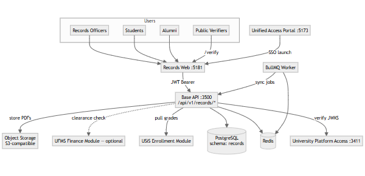
Key relationships:
/verify without authentication| Container | Technology | Port | Purpose |
|---|---|---|---|
| Records web | React 19 + Vite | 5181 | Staff operations, student requests, alumni portal, public verify |
| Base API (records module) | AdonisJS 7 + Lucid ORM | 3500 | Domain services, controllers, business logic |
| PostgreSQL | PostgreSQL 15+ | 5432 | Schema records — official records SoR (issuances, alumni) |
| Redis | Redis 7+ | 6379 | Cache, queue backend, rate limiting |
| BullMQ Worker | Node.js + BullMQ | N/A | Background sync, notifications, PDF generation |
| Object Storage | S3-compatible | N/A | Issued document PDF archival |
| University Platform Access | Identity service | 3411 | Authentication, authorization |
| USiS Enrollment | CIS module | 3500 | Grade/enrollment history source |
Deployment notes:
records isolated within wmsu_cis databaseTORMS records module organized by official records lifecycle:
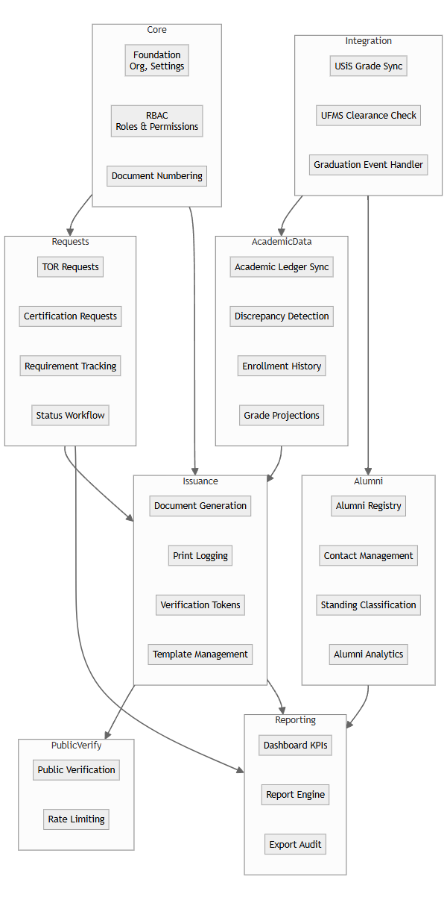
Domain responsibilities:
| Domain | Key entities | Services |
|---|---|---|
| Core | Organization, Campus, DocumentNumbering, Settings | Foundation config, numbering schemes |
| Requests | TORRequest, CertificationRequest, RequestRequirement, StatusHistory | Request lifecycle management |
| Issuance | Issuance, IssuanceLog, VerificationToken, PrintEvent | Document generation, verification |
| Academic Data | LedgerProjection, GradeProjection, Discrepancy, SyncRun | USiS data sync, discrepancy detection |
| Alumni | AlumniProfile, AlumniContact, AlumniEmployment, AlumniEducation | Alumni registry, standing management |
| Integration | USiSGradeSync, UFMSClearanceClient, GraduationEventHandler | External system integration |
| Public Verify | VerificationAttempt, RateLimitRecord | Public verification, rate limiting |
| Reporting | Report, ReportExport, DashboardMetric | Analytics, export audit |
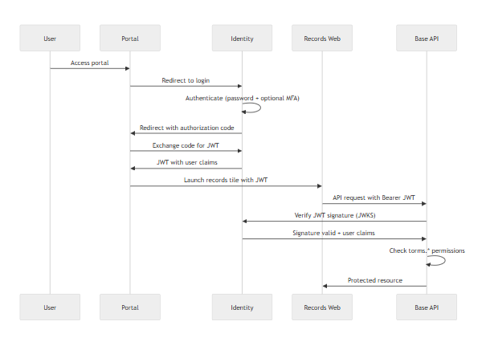
Public verification flow:
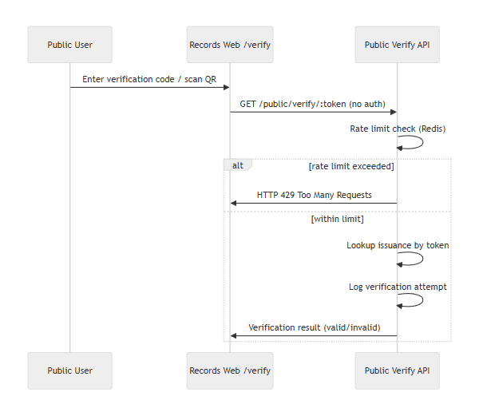
Security controls:
| Layer | Control | Implementation |
|---|---|---|
| Transport | TLS 1.2+ | Reverse proxy termination |
| Authentication | OIDC/JWT | Identity service RS256 tokens |
| Authorization | RBAC | torms.* permission checks |
| Public endpoints | Rate limiting | Redis-backed limiter (10/min/IP) |
| Internal APIs | Service keys | X-Service-Api-Key header |
| Document access | Role-based | Issued PDFs restricted to officers |
| Verification tokens | UUID v4 | Cryptographically unique |
TORMS permission categories:
torms.requests.* — Request management (view, create, transition)torms.issuance.* — Document generation and printingtorms.alumni.* — Alumni registry managementtorms.sync.* — Academic sync operationstorms.reports.* — Report generation and exporttorms.config.* — System configurationRole mappings:
records_officer → All torms.* permissionsstudent → torms.requests.own, torms.issuance.view_ownalumni → torms.alumni.own, torms.issuance.view_ownregistrar (cross-system) → torms.sync.view, torms.reports.viewPostgreSQL schema records contains:
Core tables:
organizations, campuses, settingsdocument_numbering_schemesRequest lifecycle:
tor_requests, certification_requestsrequest_requirements, request_status_historyIssuance:
issuances, issuance_logs, print_eventsverification_tokensAcademic data (projections from USiS):
ledger_projections, grade_projectionsenrollment_historydiscrepancies, sync_runsAlumni:
alumni_profiles, alumni_contactsalumni_employment, alumni_educationalumni_standing_historyIntegration:
sync_runs, clearance_checksVerification:
verification_attempts (audit log)Reporting:
report_exports (audit log)USiS → TORMS sync:
No reverse sync: TORMS never writes back to USiS. USiS remains single source of truth for academic data.
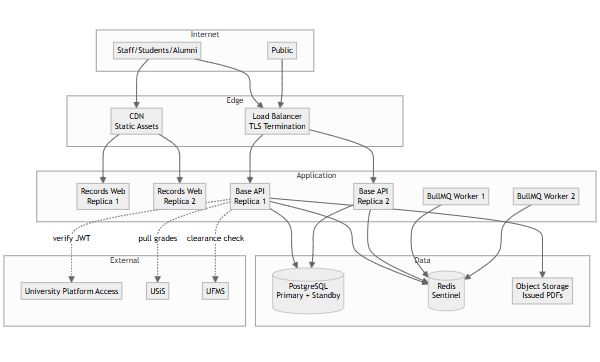
Sizing guidance:
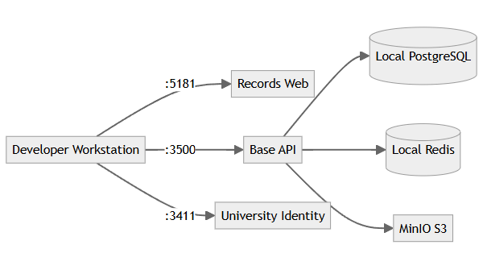
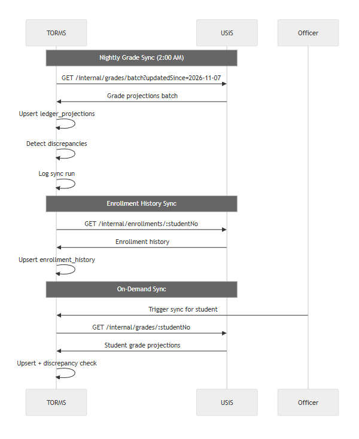
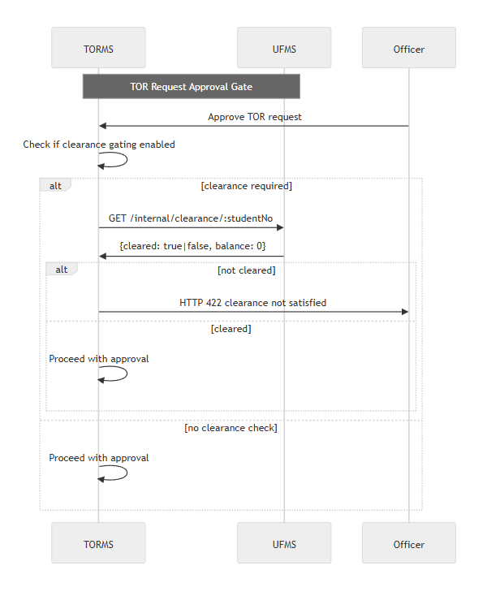
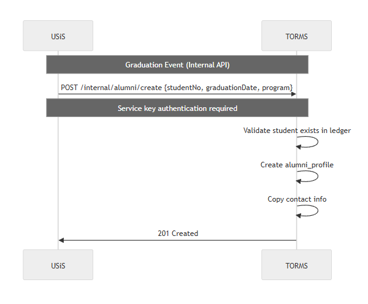
Optimization strategies:
Monitoring:
Horizontal scaling:
Data growth:
Failure handling:
Data integrity:
Code organization:
Operational:
Data privacy (RA 10173):
Records management:
End of Architecture Design — TORMS
| Field | Value |
|---|---|
| Document ID | FEAT-TORMS-001 |
| Product | TORMS |
| Companions | TORMS-SRS.md · TORMS-LLD.md |
| Date | November 2026 |
TORMS provides comprehensive official records management for Philippine university compliance:
| Area | Features | Status |
|---|---|---|
| Authentication | University Platform Access SSO, role-based routing | Delivered |
| TOR Requests | Submission, status workflow, requirement tracking, PDF generation, print logging | Delivered |
| Certifications | Multiple types (honorable dismissal, good moral, units, completion), PDF generation | Delivered |
| Academic Ledger | Grade/enrollment sync from USiS, discrepancy detection, reconciliation | Delivered |
| Alumni Registry | Profile management, contact updates, standing classification | Delivered |
| Public Verification | Unauthenticated QR/code verification with rate limiting | Delivered |
| Dashboard | KPIs, pending requests, recent issuances, sync status | Delivered |
| Reporting | Issuance reports, request aging, alumni demographics, export audit | Delivered |
| Configuration | Document numbering, templates, signatories, clearance rules | Delivered |
| Feature ID | Feature | Description | Priority | Actors |
|---|---|---|---|---|
| F-AUTH-01 | SSO Authentication | University Platform Access OIDC/JWT | Must | All |
| F-AUTH-02 | Role Routing | Home path by role (staff/student/alumni) | Must | All |
| F-AUTH-03 | Permission Enforcement | torms.* checks on all endpoints |
Must | System |
| F-TOR-01 | TOR Request Submission | Student submits with purpose, delivery mode, copies | Must | Student |
| F-TOR-02 | Request Numbering | Auto-assign unique numbers (TOR-YYYY-NNNN) | Must | System |
| F-TOR-03 | Status Workflow | submitted → requirements_pending → processing → approved → issued → released | Must | Officer, System |
| F-TOR-04 | Request Management | Officer view/filter/search all requests | Must | Officer |
| F-TOR-05 | Status Transitions | Officer advances status with notes | Must | Officer |
| F-TOR-06 | Clearance Validation | Check clearance before approval (configurable) | Must | System |
| F-TOR-07 | Payment Verification | UFMS payment check if gating enabled | Should | System |
| F-TOR-08 | Requirement Attachments | Upload/attach requirement documents | Must | Student, Officer |
| F-TOR-09 | Request Notifications | Email/SMS on status transitions | Should | System |
| F-TOR-10 | TOR PDF Generation | Generate with ledger, seal, signatures | Must | System |
| F-TOR-11 | Verification QR Codes | Embed QR on TOR documents | Must | System |
| F-TOR-12 | Print Logging | Log print events with timestamp/officer | Must | System |
| F-TOR-13 | Digital Download | Student download issued TOR | Must | Student |
| F-CRT-01 | Certification Types | Honorable dismissal, good moral, units, completion, diploma verify | Must | System |
| F-CRT-02 | Certification Requests | Student submit with type and purpose | Must | Student |
| F-CRT-03 | Certification Numbering | Type-specific numbering (HD-YYYY-NNNN) | Must | System |
| F-CRT-04 | Certification Workflow | submitted → processing → issued → released | Must | Officer, System |
| F-CRT-05 | Certification Configuration | Configure types, templates, requirements | Should | Admin |
| F-CRT-06 | Certification PDF | Generate from templates with verification codes | Must | System |
| F-CRT-07 | Certification Print Log | Log print events | Must | System |
| F-LED-01 | Grade Sync | Pull grades from USiS internal API | Must | System |
| F-LED-02 | Ledger Projections | Create/update projections (no USiS mutation) | Must | System |
| F-LED-03 | Discrepancy Detection | Compare projections to USiS source | Must | System |
| F-LED-04 | Discrepancy Reports | Surface discrepancies to officers | Must | Officer |
| F-LED-05 | Manual Resolution | Officer resolves discrepancies with audit | Must | Officer |
| F-LED-06 | Enrollment History Sync | Sync enrollment records from USiS | Must | System |
| F-LED-07 | Sync Metadata Tracking | Log run timestamp, count, errors | Must | System |
| F-LED-08 | Sync Retry Logic | Exponential backoff on failure | Should | System |
| F-LED-09 | On-Demand Sync | Officer trigger sync for specific student | Should | Officer |
| F-ALM-01 | Alumni Auto-Creation | Create from USiS graduation event | Must | System |
| F-ALM-02 | Contact Updates | Alumni update address/phone/email | Must | Alumni |
| F-ALM-03 | Document Viewing | Alumni view issued TOR/certifications | Must | Alumni |
| F-ALM-04 | Standing Classification | Maintain alumni standing (active, distinguished, etc.) | Should | Officer |
| F-ALM-05 | Employment Tracking | Self-reported employment/education | Should | Alumni |
| F-ALM-06 | Alumni Reports | Demographic reports by graduation year/program | Should | Officer |
| F-ALM-07 | Bulk Import | Import legacy alumni data | Could | Admin |
| F-VRF-01 | Public Verify Page | /verify without authentication |
Must | Public |
| F-VRF-02 | Code/QR Entry | Enter code or scan QR | Must | Public |
| F-VRF-03 | Verification Result | Return valid (name, type, date) or invalid | Must | System |
| F-VRF-04 | PII Protection | No sensitive data beyond name/type/date | Must | System |
| F-VRF-05 | Verification Logging | Log attempts with IP/timestamp | Must | System |
| F-VRF-06 | Rate Limiting | 10 requests/minute/IP | Must | System |
| F-VRF-07 | Branded Display | Show university branding on results | Should | System |
| F-DSH-01 | Officer Dashboard | Pending requests, recent issuances, sync status | Must | Officer |
| F-DSH-02 | KPIs | Requests by status, processing time, issuance volume | Should | Officer |
| F-RPT-01 | TOR Issuance Report | By date range, program, student type | Must | Officer |
| F-RPT-02 | Certification Report | By type and date range | Must | Officer |
| F-RPT-03 | Request Aging Report | Days in each status | Must | Officer |
| F-RPT-04 | Alumni Demographics | By graduation year, program, location | Should | Officer |
| F-RPT-05 | Report Export | CSV and PDF formats | Must | Officer |
| F-RPT-06 | Export Audit Log | Log exports with user/timestamp | Must | System |
| F-CFG-01 | Numbering Schemes | Configure prefix, year format, sequence | Must | Admin |
| F-CFG-02 | Template Upload | PDF-compatible document templates | Should | Admin |
| F-CFG-03 | Signatory Config | Authorized signatories with titles/signatures | Must | Admin |
| F-CFG-04 | Clearance Rules | Configure requirements per document type | Should | Admin |
| F-CFG-05 | Config Audit Log | Log configuration changes | Must | System |
| Requirement ID | Requirement | Related Features | Priority | Implementation Status |
|---|---|---|---|---|
| FR-AUTH-001..005 | Authentication and authorization | F-AUTH-01..03, F-VRF-01 | Must | Delivered |
| FR-TOR-001..013 | TOR request management | F-TOR-01..13 | Must/Should | Delivered |
| FR-CRT-001..007 | Certification management | F-CRT-01..07 | Must/Should | Delivered |
| FR-LED-001..009 | Academic ledger sync | F-LED-01..09 | Must/Should | Delivered |
| FR-ALM-001..007 | Alumni registry | F-ALM-01..07 | Must/Should/Could | Delivered |
| FR-VRF-001..007 | Public verification | F-VRF-01..07 | Must/Should | Delivered |
| FR-DSH-001..002 | Dashboard | F-DSH-01..02 | Must/Should | Delivered |
| FR-RPT-001..006 | Reporting | F-RPT-01..06 | Must/Should | Delivered |
| FR-CFG-001..005 | Configuration | F-CFG-01..05 | Must/Should | Delivered |
| NFR Category | Requirement ID | Related Features | Implementation Approach |
|---|---|---|---|
| Performance | NFR-PERF-001..005 | All features | Database indexing, Redis caching, async PDF generation, pagination |
| Scalability | NFR-SCAL-001..004 | All features | Horizontal API scaling, worker pools, table partitioning |
| Security | NFR-SEC-001..010 | F-AUTH-, F-VRF-, F-CFG-* | TLS, RBAC, rate limiting, UUID tokens, audit logging, RA 10173 compliance |
| Reliability | NFR-REL-001..005 | All features | HA deployment, backups, DR procedures, graceful degradation, immutable docs |
| Maintainability | NFR-MAIN-001..005 | All features | Modular architecture, OpenAPI, structured logs, versioned migrations |
| Compliance | NFR-COMP-001..004 | Student/alumni data | RA 10173, FERPA-equivalent, 7-year audit retention |
WMSU TOR VI.E.6 compliance matrix:
| TOR Requirement | Feature IDs | Implementation Notes | Compliance Status |
|---|---|---|---|
| TOR request and processing | F-TOR-01..13 | Full lifecycle from submission to issuance | Delivered |
| Multiple certification types | F-CRT-01..07 | Honorable dismissal, good moral, units, completion, diploma verify | Delivered |
| Academic record management | F-LED-01..09 | USiS sync with discrepancy detection; TORMS is projection, not SoR | Delivered |
| Alumni registry | F-ALM-01..07 | Auto-creation from graduation, contact management, standing | Delivered |
| Document verification | F-VRF-01..07 | Public QR/code verification with rate limiting | Delivered |
| Clearance integration | F-TOR-06, F-TOR-07 | UFMS clearance checks when enabled | Delivered |
| Print audit trails | F-TOR-12, F-CRT-07 | Print event logging for accountability | Delivered |
| Reporting and analytics | F-RPT-01..06, F-DSH-01..02 | Issuance, aging, alumni reports with export | Delivered |
Deferred/Out of scope:
| Metric | Target | Measurement |
|---|---|---|
| API response (p95) | ≤2s standard queries | APM monitoring |
| PDF generation | ≤10s per TOR | Performance profiling |
| Public verification (p95) | ≤1s | Load testing |
| Academic sync (1000 students) | ≤30 minutes | Job duration metrics |
| Control | Implementation | Verification |
|---|---|---|
| TLS enforcement | Reverse proxy/ingress | SSL Labs scan |
| RBAC | torms.* permission checks |
Automated security tests |
| Rate limiting | Redis-backed (10/min/IP) | Load test verification |
| Audit logging | Structured logs for issuance/print/config | Log review |
| Token uniqueness | UUID v4 | Code review + statistical testing |
| Measure | Target | Method |
|---|---|---|
| Availability | ≥99% business hours | SLA monitoring |
| Backup frequency | Daily incremental, weekly full | Automated verification |
| RPO | ≤15 minutes | DR drill testing |
| Document immutability | No deletion post-issuance | Business rule enforcement + audit |
| Actor | Primary Features | Restricted Features |
|---|---|---|
| Records Officer | F-TOR-04..12, F-CRT-05..07, F-LED-04..05, F-LED-09, F-ALM-04, F-RPT-01..06, F-DSH-01..02, F-CFG-01..05 | Full records management |
| Student | F-TOR-01, F-TOR-08, F-TOR-13, F-CRT-02 | Own requests only |
| Alumni | F-ALM-02, F-ALM-03, F-ALM-05 | Own profile and documents |
| Registrar (cross-system) | F-LED-04, F-RPT-01..06 | Oversight and reports |
| Public | F-VRF-01..07 | Verification only |
| System (Background) | F-TOR-02..03, F-TOR-10..12, F-CRT-06..07, F-LED-01..03, F-LED-06..08, F-ALM-01, F-VRF-03..06 | Automated operations |
End of Features & Requirements — TORMS
| Field | Value |
|---|---|
| Document ID | LLD-TORMS-001 |
| Product | TORMS |
| Companion | TORMS-SRS.md |
| Date | November 2026 |
This Low-Level Design documents critical workflows for TORMS TOR requests, certification issuance, academic ledger synchronization from USiS, public document verification, alumni management, and records officer operations — providing sequence diagrams, state machines, and implementation details.
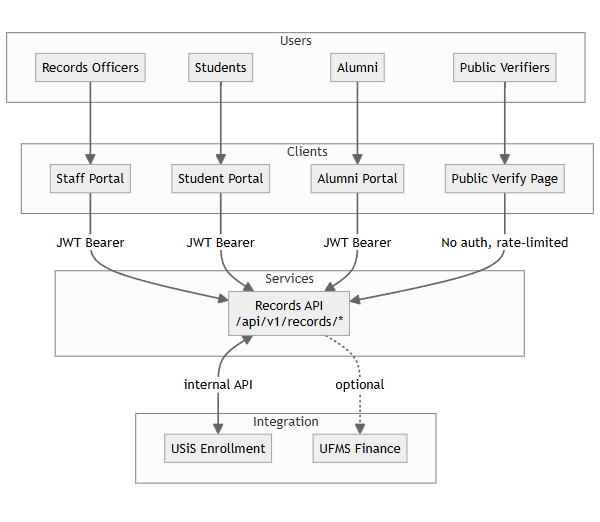
Role-specific routes:
/staff/*/student/*/alumni/*/verify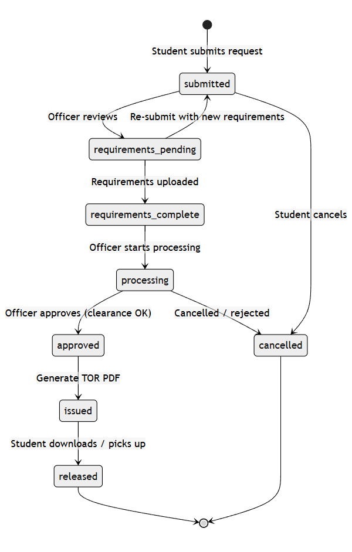
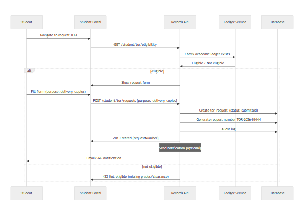
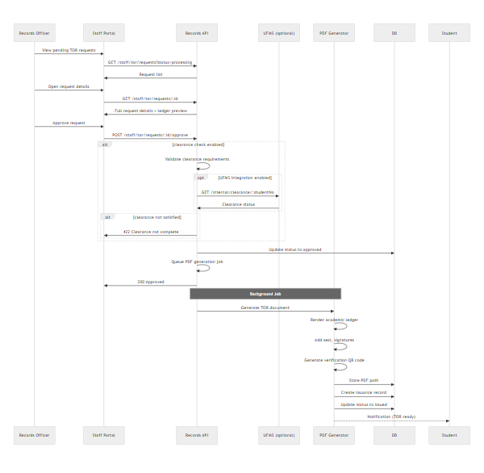
| Certification Type | Code | Number Format | Typical Use |
|---|---|---|---|
| Honorable Dismissal | HD | HD-2026-0001 |
Transfer to another institution |
| Good Moral Character | GMC | GMC-2026-0001 |
Employment, visa applications |
| Units Earned | UE | UE-2026-0001 |
Proof of partial completion |
| Completion | CMPL | CMPL-2026-0001 |
Program completion (non-degree) |
| Diploma Verification | DV | DV-2026-0001 |
Verify diploma authenticity |
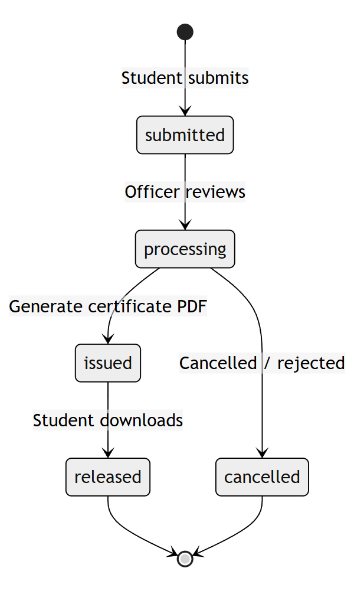
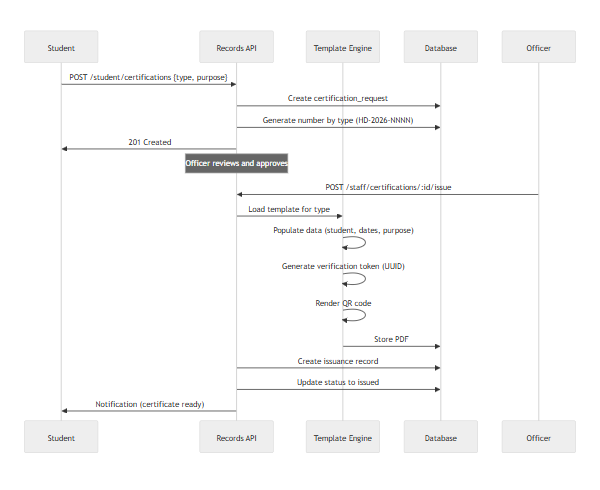
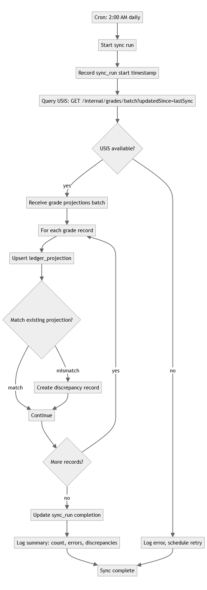
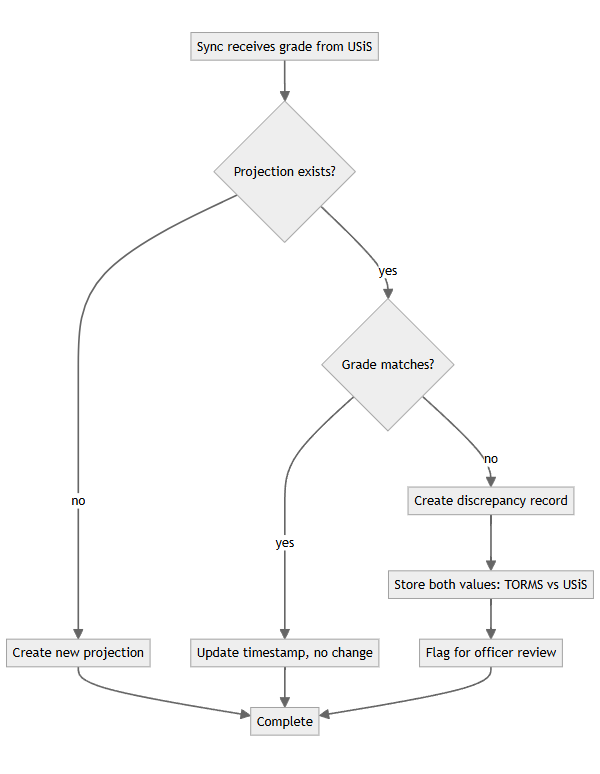
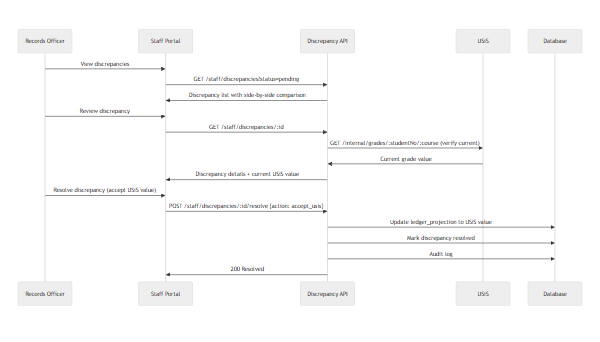
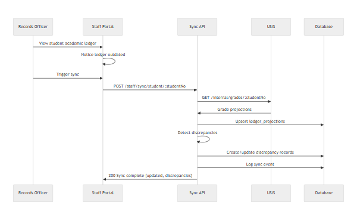
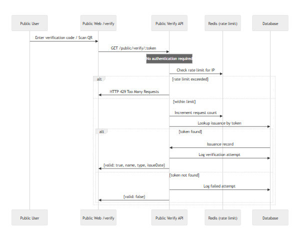
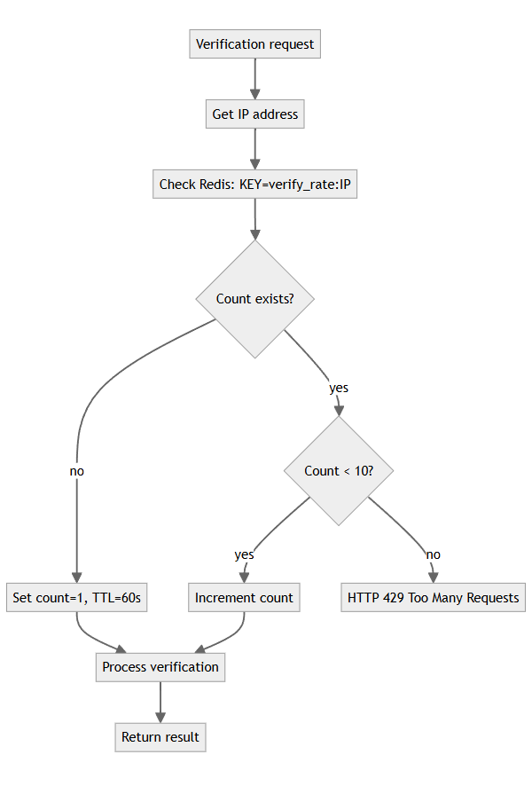
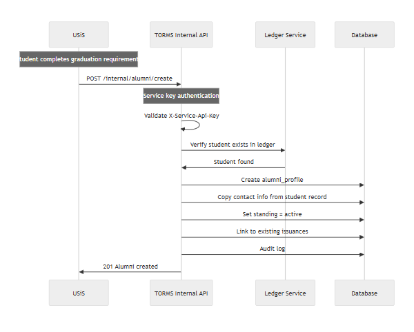
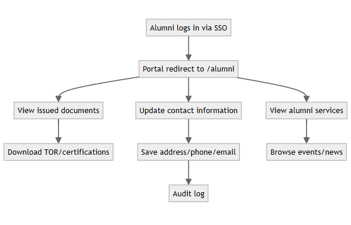
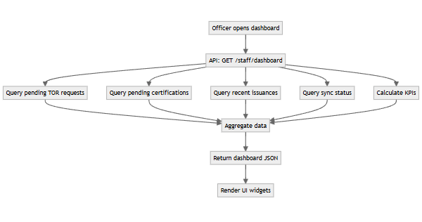
| KPI | Calculation | Data source |
|---|---|---|
| Total pending requests | Count where status IN (submitted, requirements_pending, processing) | tor_requests + certification_requests |
| Average processing time | AVG(issued_at - submitted_at) for last 30 days | issuances |
| Issuance volume (monthly) | Count issuances grouped by month | issuances |
| Sync status | Latest sync_run timestamp + error count | sync_runs |
| Discrepancy count | Count where status = pending | discrepancies |
| Alumni registered (YTD) | Count created this year | alumni_profiles |
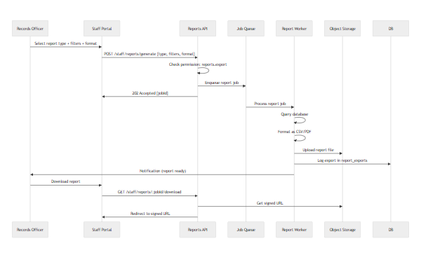
| Report Type | Query complexity | Typical runtime |
|---|---|---|
| TOR Issuance | Simple (issuances + student join) | <5s |
| Certification Issuance | Simple (issuances + type filter) | <5s |
| Request Aging | Medium (status history aggregation) | 10-30s |
| Alumni Demographics | Medium (alumni + program join, grouping) | 10-30s |
| Sync Status | Simple (latest sync_runs) | <2s |
| Case | Expected Behavior | HTTP Status | User Message |
|---|---|---|---|
| TOR request without academic ledger | Block submission | 422 | "Academic records not found. Contact registrar." |
| Approve TOR with pending clearance | Block approval | 422 | "Clearance requirements not satisfied." |
| UFMS unavailable during clearance check | Log error, allow manual override | 503 | "Clearance service unavailable. Manual verification required." |
| Public verify with invalid token | Return not found | 404 | "Invalid verification code." |
| Public verify exceeds rate limit | Block request | 429 | "Too many verification attempts. Try again in 1 minute." |
| Sync while USiS down | Log error, retry scheduled | N/A | "Sync failed. Will retry automatically." |
| Duplicate alumni creation (graduation replay) | Idempotent — return existing | 200 | Existing alumni ID |
| Student accesses other student's TOR request | Authorization failure | 403 | "Access denied." |
| Alumni updates to restricted fields (e.g., graduation date) | Block update | 422 | "Field cannot be modified." |
| PDF generation failure | Log error, flag for manual generation | 500 | "Document generation failed. Request logged." |
| Discrepancy resolve without permission | Authorization failure | 403 | "Insufficient permissions." |
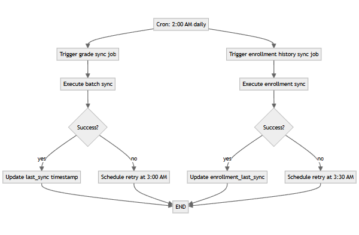
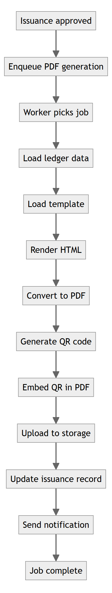
End of LLD — TORMS